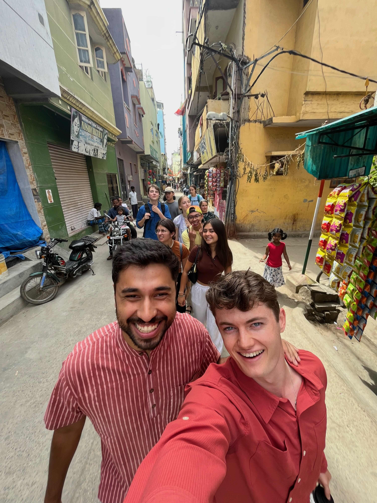
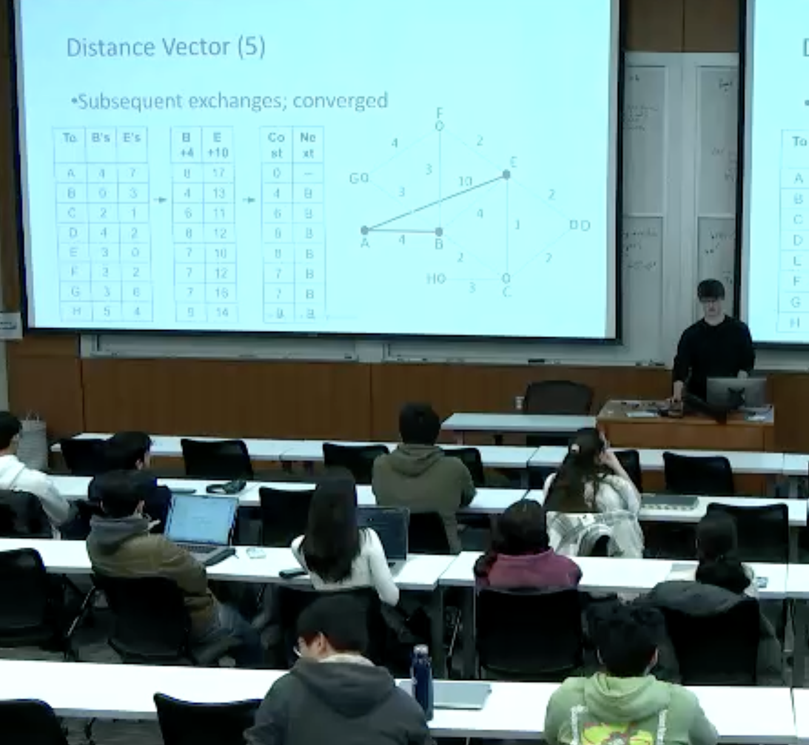

This image is pretty reprentative of my experience in India and what I learned there. You can see our group, we all had different interests and experiences before this program, and we ended up as great friends. At the front of the photo you see me and Abner Manzar, who volunteers for the Digital Empowerment Foundation. The intention of the program was to learn about social entrepreneurship, which is building businesses for social good. Some of the ventures that spoke the most to me as someone interested in computers were those working to make technology more inclusive and available, which is the main goal of the Digital Empowerment Foundation. An idea I became attached to was that to have a significant positive impact in a community, one really should go through the people in that community. You want to empower those in the community to help their neighbors. That was the idea behind the Soochnapreneurs, who provided technology and education to women in impoverished communities to be the access point of technology for that community. That empowered those women to provide the tools their community needed the most.
This is a screenshot from a lecture I lead in this course on the topic of intra-domain routing. I put a lot of pressure on myself to lecture "perfectly." I prepared a lot before the lecture. However, when it came time to put on the mic, I felt the nerves hit, and it wasn't until 20 minutes into the lecture that I got into my stride. I am proud of myself for how I prepared and handling the variety of questions (including those from the professor to make sure I didn't miss any material). In teaching lecture, I learned to have a little more empathy with myself, especially when in a leadership position.
